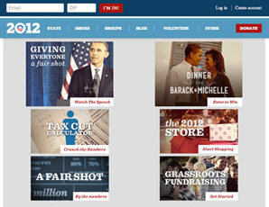

"Hello World!"
RESPONSIVE WEB DESIGN
a.k.a RWD
by @ajaycb
Cofounder/CTO, infibeam.com
RWD - Definition
"Approach that suggests that design and development should respond to the user’s behavior and environment based on screen size, platform and orientation."
RWD - Definition
Reponsive Design is Web Design done right! Embrace the fact that the web canvas is not fixed.
Web Canvas
Dont be a Pixel Perfectionist
In print the designer is god - WYSIWYG rulesDont be a Pixel Perfectionist...
- Web's canvas is not of a fixed size, so why should our designs be?
- What is seen as a limitation is its strength
- Think about what your pages do, not what they look like
- Separate the content and its appearance.
To App or not to App?
Pros- Native Behaviour
- Faster
- Access to phone's camera, contacts, GPS, Notifications, etc.
- Offline
To App or not to App?
Cons- Expensive - iOS, Android, WP?
- Fragmented - Making it even more expensive
- Double effort if Web Site is needed (except games and utility apps, most content rich apps will fall under this category)
- Slower to build as the tech is also fragmented
- Deployment - Going back to the 80-90's deployment - Forcing users to update to fix bugs is a PITA
Answer? - It Depends :)
Building Blocks
- CSS3 Media Queries
- Liquid Everything!
- Liquid Layout
- Liquid Images & Videos
- Design Challenges
- Test. Test. Test.
- x-Browser testing just got more painful
- (Mobile, Tablet, Desktop) x # of Browsers
Media Queries
We have been using media queries for a long while but only limited to a single media type.Remember this?
<link rel="stylesheet" type="text/css"
href="screen.css" media="screen" />
<link rel="stylesheet" type="text/css"
href="print.css" media="print" />
CSS3 Media Queries
Media Type + conditions
<link rel="stylesheet" type="text/css"
media="screen and (max-device-width: 480px)"
href="mobile.css" />
Inline in CSS
@media screen and (max-device-width: 480px) {
.column {
float: none;
}
}
Or using @import
@import url("mobile.css") screen
and (max-device-width: 480px);
Media Queries
Same HTML.Different CSS to style for various resolutions.
Liquid Layouts
- Fixed is easier - photoshop it and implement it
- Liquid is harder
- But Liquid embraces the very nature of the web
Liquid Layouts
- Specify everything in Pecentages
- target ÷ context = result
- Design for a target - Plug in the context
- Grids Help - That way you can still design with a fixed size in terms of number of columns(not pixels)
target ÷ context = result
700 ÷ 988 = 0.7085
700 ÷ 988 = 0.7085
- We get 70.85% as the desired width of #title
- That way by changing the context to smaller or bigger, the percentage will ensure it remains liquid and as close as possible to the original design (based on a fixed canvas)
Use a CSS Framework!
- This math is not hard - its painful
- Many open source frameworks out there (tested and community support) to get you started
- Align the content to the grid and you are done
- Mostly flavours of 12/24 column (as 12 is divisible by 2,3 & 4)
- Most of them target (via media queries) 4 different sizes - Desktop screen, laptop, tablet, and mobile
Use a CSS Framework!
- Foundation - ZURB
- Bootstrap 2 - Twitter
- lessframework
- The 1140px CSS Grid System
- Goldilocks
- Skeleton
- and a lot more..
Liquid Images/Vidoes
- Very Painful
- Images/Videos are fixed size by definition
- How does one fit it into a liquid layout?
- Multiple options exist - with different tradeoffs
- No browser support (like we have for media queries)
- Have direct impact on speed as images make up the bulk of most web pages
Liquid Images/Vidoes
- Use this to solve most problems:
img, object, embed { max-width: 100%;} img { -ms-interpolation-mode: bicubic; } - Will ensure that the width of the image will never overflow the container size
- Also will never blow "up" the image
- Does not address serving a smaller image
- Can impact the mobile experience where network speeds can be really slow!
Liquid Images - Approaches
- Use 3rd Party solution (like Sencha.IO)
- Own Server side solution that resizes images on the fly based on cookies
- Annotate DOM with a source set and set the right image src via JS
<img src="200x100.png" data-1x="400x200.png" data-2x="800x400.png"><picture alt="description"> <source src="small.jpg"> <source src="medium.jpg" media="(min-width: 400px)"> <source src="large.jpg" media="(min-width: 800px)"> </picture>
Annotating DOM with a source set
- Problem: Browser will fetch the small size and then get the larger image for larger screens (double load)
- Some solutions set the src to a static 1x1 transparent pixel and swap out the right image
Liquid Images
- Do you..
- have legacy content?
- care about special markup?
- care about art direction?
- care about Server Side Components?
- care about bandwidth testing?
- care about relying on third parties?
- care about CDN friendlieness?
Best Practices
- Mobile first - Go all the way to large screens
- Should work for mutitouch and the mouse
- avoid hover - or give alternative navigation if hover hides information
- Handle touch events apart from the regular click events
Best Practices
- Sometimes it will be necessary to model more than 1 separate behaviour.
Eg. one for the large screen and one for the small screen or one for touch and one for mouse - Mostly will not impact the entire design but only a part of it
- Easiest solution is to implement both and switch the view conditionally
- Large Data Tables are tricky - Some solutions exist but each have their share of problems
Best Practices
- Use SCSS if possible - even for regular good ol' websites. Its just the way CSS should have originally been
- Responsive Design Bookmarklet - Google it up.
- Finally test it on real devices - There are differences in implementations between browsers.
Examples




Thank You!
Credits:
http://www.alistapart.com/articles/responsive-web-design/
http://www.alistapart.com/articles/fluidgrids/
http://css-tricks.com/which-responsive-images-solution-should-you-use/
http://foundation.zurb.com/
Credits:
http://www.alistapart.com/articles/responsive-web-design/
http://www.alistapart.com/articles/fluidgrids/
http://css-tricks.com/which-responsive-images-solution-should-you-use/
http://foundation.zurb.com/